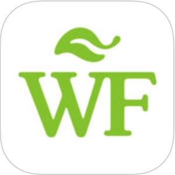
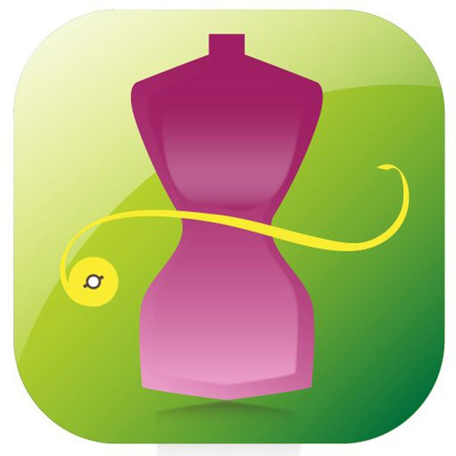
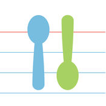
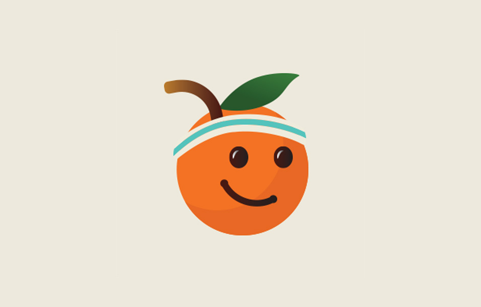
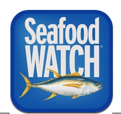

Best Healthy Lifestyle Apps of the Year
Symple
iPhone rating: ★ ★ ★ ★ ★
Price: Free
Did you take your medication this morning? What did you eat before your stomach hurt? Symple makes it easy to track how you're feeling throughout the day. You can also go back and look for patterns or dig into the times you didn’t feel your best. Graphs and color-coded symptoms help you see your health at a glance. The app is ideal for anyone with a chronic illness, but it's also helpful as a general health tracking app. You can import your steps, calories, heart rate, and more from Apple’s health app. Even better, you can export your data into a spreadsheet to make it easy to create custom graphs or share online with your doctor.
Whole Foods Market Recipes
iPhone rating: ★ ★ ★ ☆ ☆
Price: Free
Instead of aimlessly wandering the aisles and picking up whatever sounds good to you in the moment, use the Whole Foods Market app. It helps you create shopping lists, find healthy recipes, and see what’s currently on sale in your local store from home. Once your list is set, send it to your Apple Watch for easy shopping. The app also lets you text friends and family recipes straight from the app so you can share your favorite nutritious bites.
My Diet Coach
iPhone rating: ★ ★ ★ ★ ★
Price: Free
My Diet Coach is about more than quick fixes and rapid weight loss. The app is built to help you stay motivated, resist cravings, and make healthy lifestyle changes that last. While you can track your food, this app is no boring calorie counter or diet log. You can also set goals, track your progress, and set up personal reminders to keep you focused on what’s important to you.
Substitutions
iPhone rating: ★ ★ ★ ★ ★
Price: $1.99
Substitutions is a very straightforward app. This is good because when we're halfway through a recipe and panicked about finding a sub for yogurt, the last thing we want to do is click through dozens of pages to find the information we're looking for.
Fooducate
iPhone rating: ★ ★ ★ ★ ★
Price: Free
Achieve your dreams and goals with Fooducate, a weight loss coach for people who want to eat a healthy, real food diet. Track your food, activity, sleep and mood. Get motivated by the most supportive community in the world.
Seafood Watch From the Monterey Bay Aquarium
iPhone rating: ★ ★ ★ ☆ ☆
Price: Free
Seafood Watch recommendations help you choose ocean-friendly seafood at your favorite restaurants and stores. Our redesigned app makes it easier than ever to get the latest recommendations for seafood and sushi, learn more about the seafood you eat, and locate or share businesses that serve sustainable seafood.
True Food
iPhone rating: ★ ★ ★ ★ ☆
Price: Free
While the app contains a lot of brand information, we could not possibly include every brand in the country. If there is a certain brand you see at the supermarket, or purchase often, that is not included in the Guide, just send us an email from the app and we’ll include it in our next update! Please note that the Guide only includes a few organic brands as Certified Organic products are not allowed to be produced from gm crops.